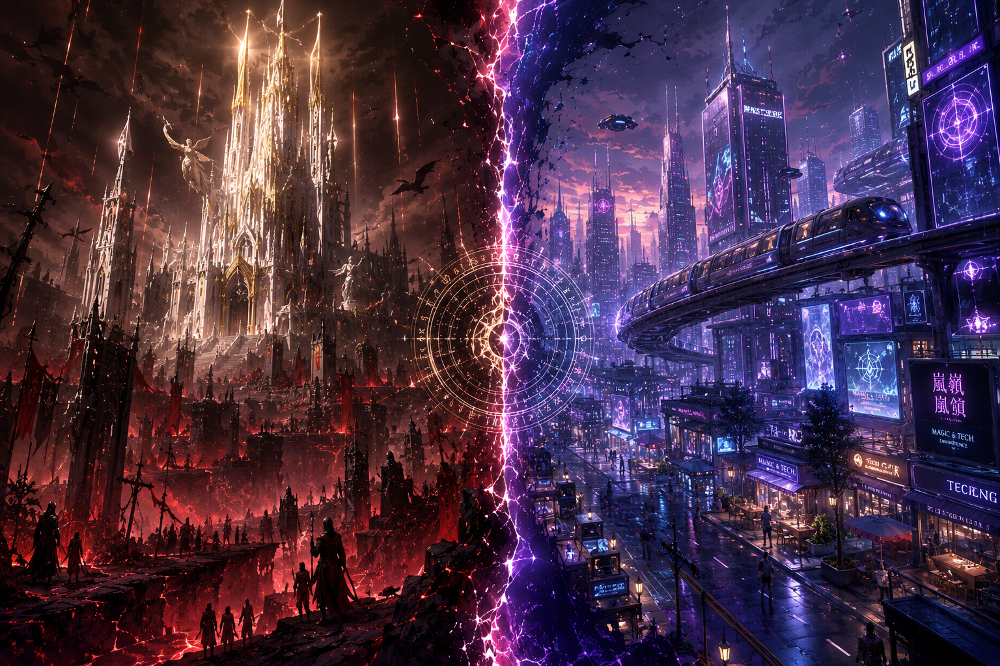

Spatiotemporal Coordination Agency // 維序者官方終端系統
警告：此處記錄受世界意識干涉之牆外側報告，非相關人員請速離去。
跨越世界意識干涉之牆 // 兩界源能流向報告

這是英雄與神蹟的時代，亦是偽善、屠殺與實驗交織的黑暗史。包含誠實暴力的魔界、全面傀儡化的白色烏托邦天界，以及充滿魔法屠殺與禁忌實驗的矛盾人界。
法則在漫長歲月中被稀釋得溫和且穩定。阿卡亞時期的極端偏見在此轉化為種族社交特徵（如魔族演化出腹黑與經商頭腦）。名門望族（如商氏、方家、顏家）皆繼承了古老血脈的遺贈。
底層代碼監測 // 時空穩定度核心參數
世界的底層代碼，部分擁有獨立自我意識。其權限高於「世界意識」，當世界意識行為失控、導致維度瀕危時，法則有權跨越壁壘，直接向 S.C.A. 發出人為干預請求。
由世界自發衍生的主觀意志。極易受到原世界藍本（如小說劇情）干涉，產生極端的「主角中心論」。一旦失控，會導致未來走向抽象與崩潰，需由 S.C.A. 進行降噪。
穿越時空的法陣與通道。每個世界能開啟的「隙間」數量，受到該世界的「世界意識強度」嚴格限制，超載將直接引發時空崩潰。
時空殘留物 (Residual Echoes)： 頻繁穿越會累積殘留能量。跨界前必須向目的地報備，若進入無意識世界，則必須執行人為能量清理以防排斥。
與世界意識簽訂契約的守護者。掌控「隙間」封印，具備強健體質、長壽並保留前世記憶。持有核心機制為「打擊存在感」與「驅逐異質靈魂」的【概念武裝】，是清理浮塵的唯一手段。
離職協議：合約轉移後將失去異界記憶變回凡人，檔案由 S.C.A. 永久保留。擁有穿越與強大戰鬥能力，但不與任何世界意識簽約的自由人。他們不隸屬於 S.C.A.，但雙方存在互利關係。
報酬系統：S.C.A. 根據其協助任務之需求，給予特定世界的金錢、虛擬身分或稀有資源作為酬勞。受時空瓦解能量汙染的破碎靈魂，不受常規規則約束，具備極強的攻擊性，會嘗試寄生或替代原住民。寄生後會恢復部分意識，但行為模式絕對傾向「混亂中立」或「混亂邪惡」。
概述： 本檔案專門收錄「超越單一世界規則束縛、具備自由穿梭時空能力」之特殊個體。此類個體或具備創世級源能，或屬於法規之外的因果特異點。S.C.A. 對此類個體的標準作業程序（SOP）為：禁止採取強制性物理干涉 ➔ 優先鎖定其情感/行為錨點 ➔ 依據個體動態進行周邊降噪與善後協調。
評估摘要：行蹤飄忽，無法以常規邏輯預測其動向。其能量特徵與 Vesper 高度相似，且具備極強的隨機干涉力。若在任務中偶遇，切勿正面衝突，避免引發不必要的時空漣漪。
評估摘要：來源不明的墮神、災厄觀測者，現於目標世界以職業偵探自居。本質為「混亂善良」，不以毀滅時空為目的，但極度熱衷於以「紛爭與不幸」為樂。具備恐怖的「情緒引導與增幅」權能，且擁有「無損再生」的非人結構。
評估摘要：原生於阿卡亞世界的普通人類，因長期接觸 Vesper，其靈魂被 Vesper 的「混沌」屬性浸染與改造，因禍得福成為極少數能「直視並承受時空之力」的原創人類。目前具備高超的駭客技術，常以「兔子 Bammie」的身分與局內進行非官方的技術博弈。
資訊安全干涉牆 // 核心數據與維序匿名端